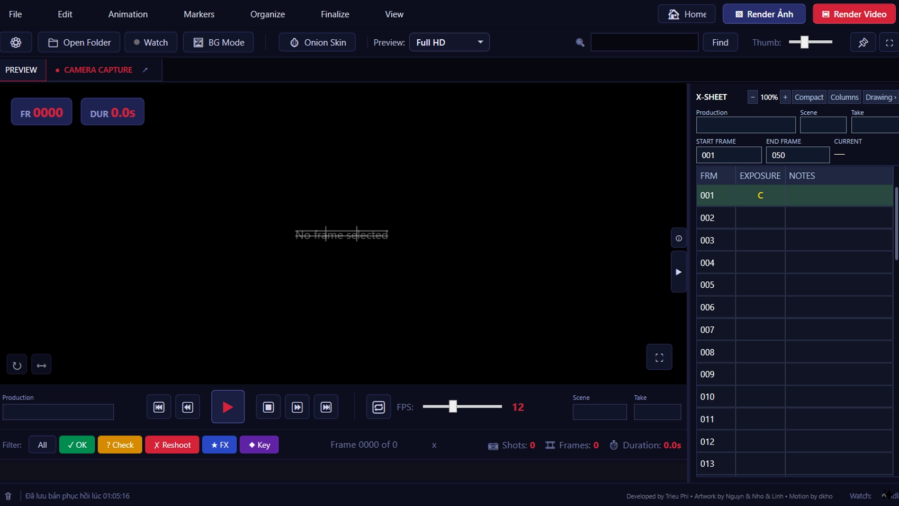

FRAME 1assets/images/app/product-frame-1.webp

16:9 / PRODUCT FRAMESCLICK / NEXT FRAME
DA&D StopMotion được xây theo đúng trình tự sản xuất stop-motion: chụp, animate, review, tổ chức và xuất.
DA&D StopMotion được xây theo đúng trình tự sản xuất stop-motion: chụp, animate, review, tổ chức và xuất.
Chụp frame ưu tiên camera, luôn giữ feedback production ở gần.
Hỗ trợ timing và chuyển động cho những quyết định frame-by-frame.
Kiểm tra chuyển động và continuity mà không rời workflow.
Giữ shot và frame có cấu trúc khi project lớn dần.
Đưa material hoàn thiện sang hậu kỳ một cách sạch sẽ.
DA&D gom những thao tác quan trọng của stop-motion vào cùng một không gian: chụp, sắp xếp frame, xem lại chuyển động, lập kế hoạch và chuẩn bị material cho hậu kỳ.
Kết nối camera, Live View và đưa ảnh chụp vào timeline sau khi file được nhận.
Chọn nhiều frame, kéo đổi thứ tự, copy/cut/paste, đảo chiều, nhân bản, ẩn frame, Hold/Exposure và phục hồi frame đã xóa.
Phát theo FPS và Hold, đặt vùng phát A–B, lặp, bước từng frame, zoom/pan, xoay/lật, Onion Skin ảnh trước hoặc sau, lưới và vùng an toàn.
Theo dõi shot ở dạng bảng, làm việc với frame/exposure, ghi chú và thao tác theo hàng để kế hoạch animation dễ đọc hơn khi cảnh dài dần.
Vẽ đường chuyển động, chia nhịp theo frame và kiểm tra spacing. Luồng Sony có lịch timing/easing riêng; Canon hiện có bộ guide nhiều đường và marker riêng.
Chroma Key phục vụ xem thử ghép nền trên Preview; Flicker Detection phân tích biến động sáng sau khi chụp. Các công cụ này không tự sửa ảnh nguồn.
Vẽ đường chuyển động, chia nhịp theo frame và kiểm tra spacing. Luồng Sony có lịch timing/easing riêng; Canon hiện có bộ guide nhiều đường và marker riêng.
Project DA&D lưu cấu trúc và trạng thái làm việc, trong khi media nguồn vẫn là file thật trên ổ đĩa.
Chụp trực tiếp từ Camera Capture hoặc theo dõi một thư mục ảnh đang nhận file mới.
Gắn Production / Scene / Take, sắp xếp frame, Hold, nhóm hoặc di chuyển media theo nhu cầu.
Playback, Onion Skin, X-Sheet, Motion Guide và các công cụ Preview hỗ trợ việc ra quyết định trên từng frame.
Có thể đóng gói project cùng media liên quan hoặc xuất sequence được đánh số để chuyển tiếp sang hậu kỳ.
Website chỉ công bố những gì có bằng chứng trong source hiện tại. Danh sách body và mức tương thích thực tế vẫn cần QA phần cứng.
DA&D tách rõ trải nghiệm Preview và dữ liệu nguồn. Các lớp hỗ trợ như Onion Skin, grid hay Chroma Preview không được ghi đè vào ảnh gốc.
Renderer hiện có lựa chọn tỷ lệ Gốc, 16:9, 9:16, 1:1, 4:3 và 2.39:1 cùng các mức 720p, 1080p, 4K và Max Setting.
Export Sequence / Copy and Rename tạo bản sao đánh số theo timeline, mở rộng Hold và bỏ các frame đang ẩn để bàn giao chuỗi ảnh sạch hơn.
Một số chi tiết như minimum CPU/RAM/GPU, ma trận body/firmware và codec matrix cuối cùng chưa được công bố cho đến khi có QA runtime tương ứng.
PROJECT IDENTITY / FRAME 000
Dự án bắt đầu với tên KILN Motion và phát triển thành DA&D StopMotion khi workflow, phạm vi và nhận diện trưởng thành hơn.